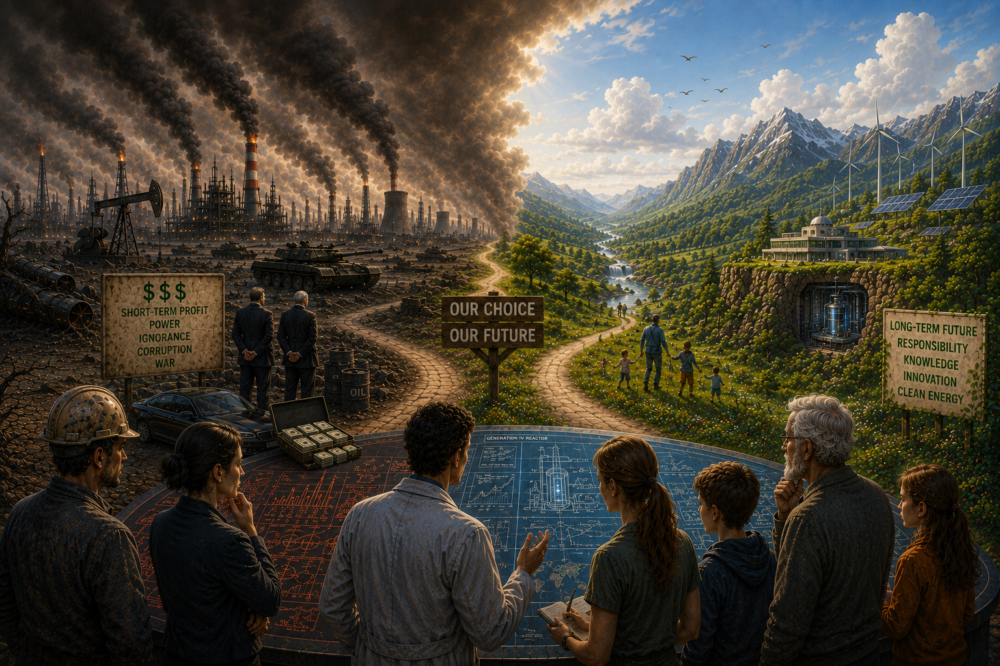

Nuclear energy is one of the most powerful and reliable energy sources, capable of producing large amounts of electricity with very low carbon emissions.
Among all available energy sources — fossil fuels, hydroelectric power, and renewables — it stands apart both technologically and in terms of public acceptance.
It is the progress in these two areas that this website, created by an independent enthusiast, aims to explore and clarify.